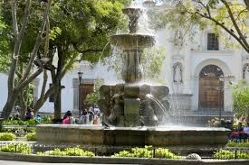
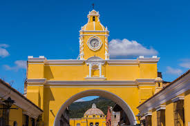
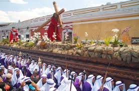

Antigua Guatemala está llena de datos interesantes. Fue una de las ciudades más importantes de Centroamérica durante la época colonial. Es famosa por sus coloridas alfombras de Semana Santa, hechas con aserrín teñido y flores. A pesar de los terremotos que dañaron muchas construcciones, sus ruinas se han convertido en parte de su atractivo turístico. Además, fue declarada Patrimonio Cultural de la Humanidad por la UNESCO, lo que resalta su valor histórico y cultural. Sus calles empedradas y fachadas antiguas hacen que parezca una ciudad detenida en el tiempo.


